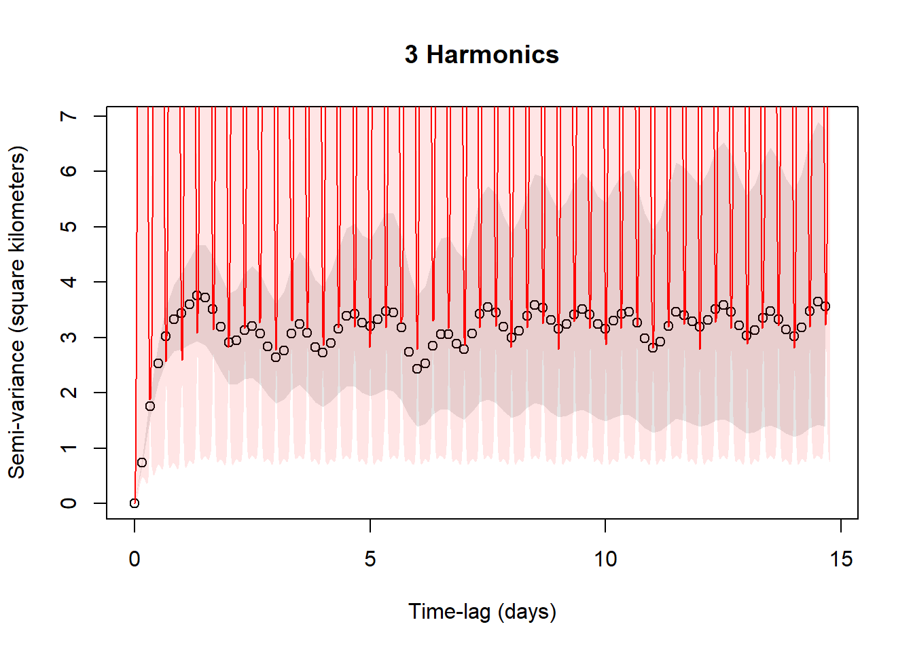
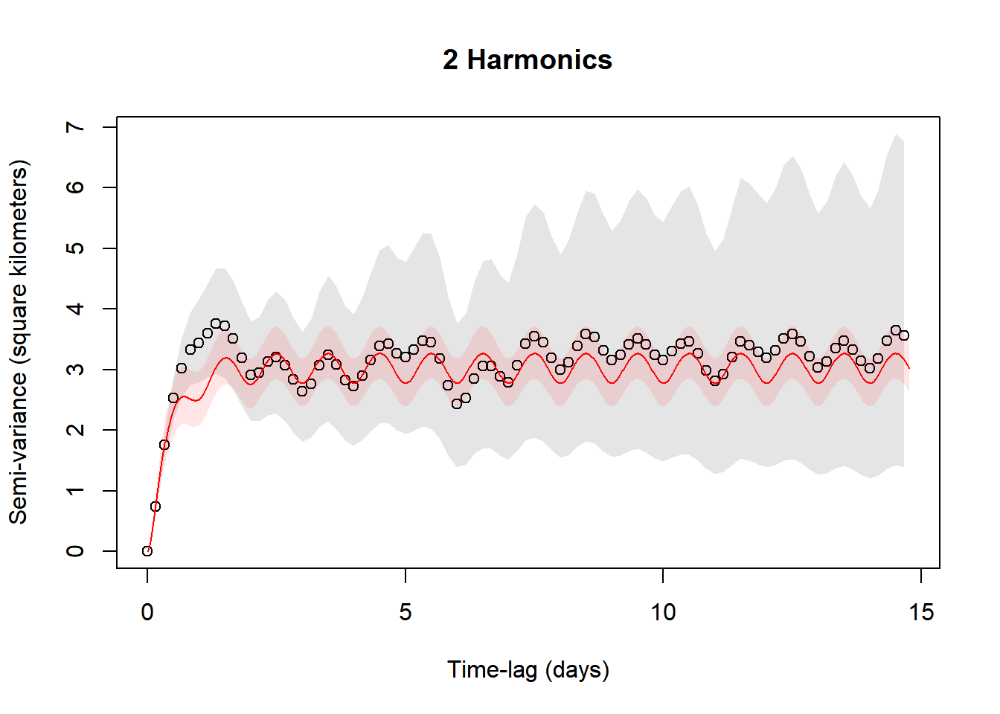

Periodic movement models
Guillaume Péron, Christen H. Fleming, and Justin M. Calabrese
2017-05-11
In this vignette, we walk through periodogram for movement data and periodic movement model fitting and selection. It is assumed that you are already familiar with data preparation with ctmm, as well as the maximum likelihood procedure described in the variogram vignette. Our example maned wolf data is already prepared into a telemetry object.
library(ctmm)
data(wolf)
Gamba <- wolf$Gamba
plot(Gamba)
Non-parametric approach: Periodograms
Before anything else, we want to plot the data in a way that makes periodic patterns apparent. This is the periodogram.
LSP <- periodogram(Gamba,fast=2,res.time=2)The fast=2 option requests the use of the (much) faster FFT-based algorithm and furthermore samples a highly composite number of times. Set the argument to FALSE to revert to Scargle’s original algorithm, which involves fewer numerical approximations. The res.time argument increases the resolution of the temporal grid when fast>0. The algorithm defaults to adequate resolution for regularly scheduled data (permitting gaps), while variable sampling rates require res.time>1 to resolve the fine scale spectrum correctly.
plot(LSP,max=TRUE,diagnostic=TRUE,cex=0.5)
The max=TRUE option keeps only local maxima and often yields periodograms that are easier to interpret, especially when the resolution of the periodogram has been increased from the default.
The diagnostic=TRUE option draws the periodogram of the sampling schedule with red symbols. If the periodogram of the sampling schedule exhibits peaks, this indicates that the corresponding peaks in the movement data could be simply caused by irregularities in the sampling schedule and not by periodicity in the movement. Here the periodogram exhibits a clear peak for the period of one day, but this is also present in the (red) diagnostic.
Periodograms are a great data exploration tool, but they do not detect everything. In particular circulation processes, those that induce circulatory patterns via a stochastic rotational effect, are often not visible in periodograms. Periodograms are also difficult to compare from one individual to the next, if the aperiodic stochastic movements of these individuals are not the same.
Parametric approach: Fitting movement models with circulatory patterns
Circulatory patterns can be incorporated into stochastic continuous time movement models in two ways: via the mean of the process, modelling that the animal reverts to a point that moves periodically through time, or via the stochastic component, by including a rotation effect. The first is called a periodic-mean process, and the second is called a circulation process.
For periodic-mean processes, you need to specify one or more period values that you want ctmm to consider.
In our example, we are going to specify a period of a day, which is what the periodogram was saying. Other individuals in this population were also exhibiting a weekly periodicity, and in similar species, lunar cycles are well-known to affect ranging behaviors.
# circle=TRUE needs to be re-tested
# PROTO <- ctmm(mean="periodic",period=c(1 %#% "day",1 %#% "month"),circle=TRUE)
PROTO <- ctmm(mean="periodic",period=c(1 %#% "day",1 %#% "month"))The mean="periodic" option tells ctmm that you want a periodic-mean process. The default is mean="stationary". The period values are all specified in seconds (SI unit) by the %#% function (see help("%#%") for more information).
The circle=TRUE option tells ctmm that you want to try and fit a model in which there is stochastic circulation on top of the periodicity in the process mean. For circulation processes, you do not need to specify candidate period values. The period of the circulation is estimated from the data.
As with other uses of ctmm, the next step is to generate an initial guess of the parameter values to feed to the likelihood optimization routine. You can do this using your intuition, by visually examining the variogram, or by letting ctmm do it for you.
SVF <- variogram(Gamba,res=3)
GUESS <- ctmm.guess(Gamba,PROTO,variogram=SVF,interactive=FALSE)ctmm.guess is a generalization of variogram.fit that can estimate other quantites from the data that are not apparent in the variogram, such as the circulation period and location correlations. A variogram argument is not necessary, but here we used the res option to increase the FFT variogram’s temporal resolution and counteract sampling variability. The interactive argument works just as with variogram.fit.
Potentially, the most complex model based on our prototype could have both circulation and multiple harmonics of daily periodicity. In addition, we also do not know whether the velocities are autocorrelated in time (OUF model) and whether the animal moves amounts in different directions (anisotropy). All of this makes for a large number of effects. Forcing all these effects upon data that do not support them would inflate the risk of overfitting or convergence issues. We thereby conduct a model selection.
control <- list(method="pNewton")
FITS <- ctmm.select(Gamba,GUESS,verbose=TRUE,control=control)## Nyquist frequency estimated at harmonic 3 88.5917638888889 of the period.The non-default control list here specifies our prototype optimization code that has been tested to be faster and more accurate on this example. With verbose=TRUE, we obtain a list fitted ctmm objects, one for each relevant combination of effects, in order of increasing AICc. The first element of that list is the preferred model. We also suggest setting the trace=TRUE option to produce updates.
summary(FITS)## dAICc DOF[mean]
## OUF anisotropic harmonic 3 0 0.000000 107.1803
## OUF anisotropic harmonic 4 0 4.818792 107.1268
## OUF anisotropic harmonic 3 1 5.599727 108.9836
## OUF anisotropic harmonic 2 0 17.064596 106.1204
## OUF anisotropic harmonic 2 1 22.627079 107.9071
## OUF anisotropic harmonic 1 0 37.618897 108.2142
## OUF anisotropic harmonic 1 1 43.040203 110.0647
## OUF anisotropic harmonic 0 0 140.521989 132.4812
## OUF anisotropic harmonic 0 1 145.259592 134.7361We see that the velocity autocorrelation (OUF), anisotropy, and circulation were unambiguously selected using the level option and were present in all the candidate models. In this maned wolf, there is rather strong support (Delta AIC > 4) for the preferred model (the first of the list). Given how we specified the prototype, harmonic 3 0 means that this preferred model has no lunar periodicity, but has three harmonics of the one-day periodicity. This fittingly corresponds to what the periodogram was saying. If there was some moon-related pattern of space use and given how we specified our prototype, we would have had a non-zero value as the second harmonic value. We also see that circulation was selected.
Next we do some sanity checking on our results. The sampling interval for Gamba is fairly steady at
"hour" %#% stats::median(diff(Gamba$t))## [1] 44 hours, which (ideally) corresponds to a Nyquist period of 8 (2 \(\times\) 4) hours, or 3 (24/8) times per day, or 3 harmonics of the day. The Nyquist period/frequency is an information limit on discretely sampled data. We expect to be able to extract a maximum of 3 harmonics from uniformly sampled data. Therefore, we should limit our consideration to harmonics of the day \(\leq\) 3, while for lower quality data, we might have to limit our consideration even further.
Consistent with these considerations, let us look at harmonics 3 and 2 of the day.
summary(FITS[[1]]) # harmonic 3 0## $DOF
## mean area
## 107.1803 178.3531
##
## $CI
## low ML high
## rotation/deviation % 74.795669 91.774630 100.000000
## rotation/speed % 96.807431 98.987421 100.000000
## area (square kilometers) 41.444887 48.269156 55.605890
## tau position (hours) 6.984418 9.267908 12.297962
## tau velocity (hours) 1.126099 1.617410 2.323076
## speed (kilometers/day) 12.674828 103.001923 204.382857summary(FITS[[4]]) # harmonic 2 0## $DOF
## mean area
## 106.1204 179.5625
##
## $CI
## low ML high
## rotation/deviation % 23.6228691 29.019474 35.648925
## rotation/speed % 24.3431627 29.868660 36.648355
## area (square kilometers) 41.1021782 47.844462 55.091281
## tau position (hours) 7.2925135 9.568355 12.554438
## tau velocity (hours) 0.9699887 1.423753 2.089789
## speed (kilometers/day) 14.7247950 16.056839 17.387434-
rotation/deviation %corresponds to \(100 \eta_P\) from the paper. It is interpreted as the proportion of the variance in the animal`s location that is caused by the periodicity in the mean. -
rotation/speed %corresponds to \(100 \eta_V\) from the paper. It is interpreted as the proportion of the variance in the animal`s velocity that is caused by the periodicity in the mean. -
circulation periodis the period of the stochastic circulations. On average, the animal re-pass through the same neighborhoods every estimated number of months (or days, or hours, depending on the automated unit specification).
Note that, aside from the rotational indices, these two models are largely consistent, and the 3 harmonic model has an extrordinarily uncertain speed estimate. We can get a better idea of what is happening by comparing the variograms.
xlim <- c(0,1/2) %#% "month"
plot(SVF,CTMM=FITS[[1]],xlim=xlim)
title("3 Harmonics")
plot(SVF,CTMM=FITS[[4]],xlim=xlim)
title("2 Harmonics")
While the confidence bands encompass the empirical variogram, the 3 harmonic model has clearly overfit in attempting to match the Nyquist period (3/day) with less than ideal data. A more stringent infromation criteria would not necessarily select the 3 harmonic model.
summary(FITS,IC="BIC")## dBIC DOF[mean]
## OUF anisotropic harmonic 3 0 0.00000000 107.1803
## OUF anisotropic harmonic 2 0 0.02420079 106.1204
## OUF anisotropic harmonic 1 0 3.47828338 108.2142
## OUF anisotropic harmonic 4 0 21.79870746 107.1268
## OUF anisotropic harmonic 3 1 22.57964253 108.9836
## OUF anisotropic harmonic 2 1 22.62707927 107.9071
## OUF anisotropic harmonic 1 1 25.99980779 110.0647
## OUF anisotropic harmonic 0 0 89.22197845 132.4812
## OUF anisotropic harmonic 0 1 111.11897842 134.7361